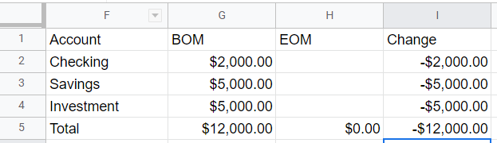
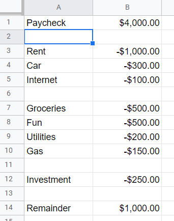
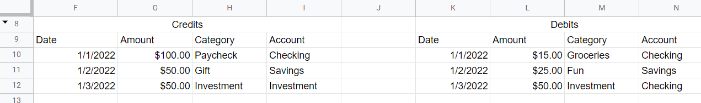
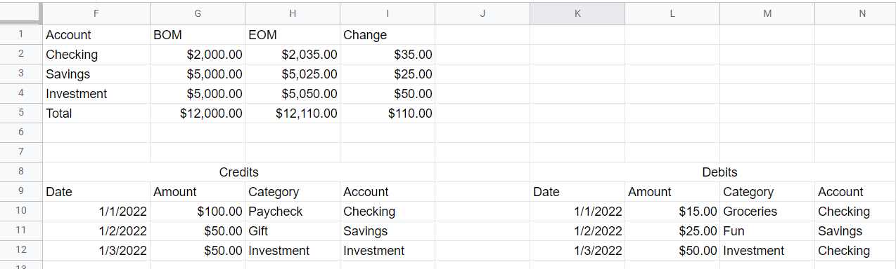
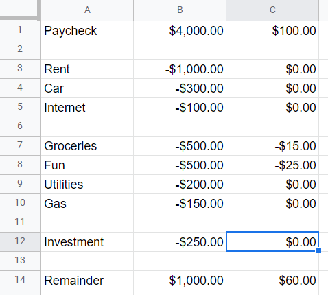
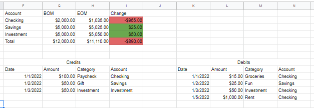
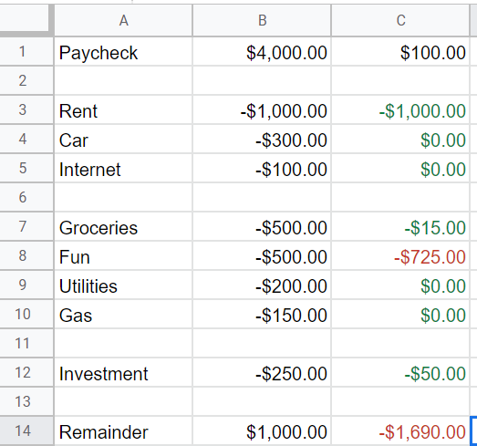

How to Build
a Budget
I love personal finance. I spend a lot of my evenings tracking the balances of the various accounts my wife and I have. I track deposits, withdrawals, growth, and depreciation. It’s calming to me. Having full knowledge of our personal finances gives me a great sense of control and stability and the best way for me to do that is to keep a budget and expense tracker for every month.
This may sound like a daunting task and indeed, tracking all this by hand would be an error filled, tedious, and frustrating mess. However, with the power of computers, and a little set up, this knowledge is easy to reach and, if you’re like me, so is the peace of mind that comes with it.
The first step is picking your program of choice. I recommend and will be using Google Sheets for this walkthrough; its availability as an app and price of $0 are hard to beat. After you make this selection, you need to start thinking creatively. A budget may indeed be primarily made of numbers, but the presentation and structure of your sheet makes the difference between a useful tool and a listless thing that causes more pain than its worth.
So this begs the question, how do you create and structure a fully functional budget sheet? In my budget sheet there are 3 sections, The Account Tracker, The Budget, and The Expense List. Click on the tabs below to learn more!
The Creation Process
The Account Summary
Your Account Summary should be formatted as a table with 4 columns, Account, BOM (Beginning of Month), EOM (End of Month), and Change. In this example we have 3 different accounts with some filler values for BOM and a formula in the Change column that subtracts EOM from BOM. I have also added a Total row at the bottom which is a SUM() formula for each column.
For now, BOM will remain empty. We will come back to this in a later tab. As you can see I also added light formatting by making all cells that contain numbers into dollar values which I will continue to do.
The Budget
Your first step to making a budget is putting down the amount of money you expect to bring in each month. Whether this is consistent or not, I recommend starting with the amount brought in last month for ease of use.
Next, we will list out our expenses and their amounts. These amounts can either be fixed, such as monthly rent or mortgage, or they can be variable, like grocery spending. You can have as many or as few categories as you would like. I have 8 in this example as you can see on the right, but this guide will work no matter how many categories you have.
- Tip: Enter your amount estimates as negative numbers so that your remainder calculation is just a SUM() formula for the whole column.
The Funds Tracker
This is the heart of the budget sheet, where you put in all the money you bring in and all of the money you spend each month. To do this I recommend using a two table structure, one for cash inflows and one for outflows. In this example below, you can see each table has four columns:
- Date
- Amount
- Categoty
- Account
Putting Everything Together
Now we have a perfectly fine layout, but much like a web page with HTML and no JavaScript, it doesn't really do much. Sure we can fill out the Funds Tracker for the whole month perfectly, but our Account Summary wouldn’t be altered and we would have no idea if we kept to our budget.
To make this a working sheet, we need to add formulas to the Account Summary and Budget sections. On the face of it, you may think that since the Budget section has 8 categories and the Account Summary has 3 sections that we will need to make 11 formulas. However, thanks to the power of computers we only need 3!
A quick note before we dive in, Google Sheets is cell-based for it’s formulas so if your sheet does not look exactly like the example then you may have to adjust your cell identifiers.
Formula for the Account Summary
For the account summary, we need a formula that can tell when we take money out or add money to an account based on the Funds Tracker to fill in the EOM column. I have added the below transactions to the Funds tracker.

The main element of our formula will be SUMIF(). To learn the ins and out of
this formula, follow this
LINK,
but since this is a budget tutorial,
not a Google Sheets one, you can copy and paste the following into the
EOM-Checking cell:
G2+ sumif($I$10:$I$1000,F2, $G$10:$G$1000)- sumif($N$10:$N$1000,F2, $L$10:$L$1000)
Then, since the formula uses ABSOLUTE REFERENCES we can then just drag it down into the two remaining cells. If all goes well this should be your result!
Formula for the Budget
This formula is just a slight modification of the one from before.
All we need to do is remove the first cell reference and then shift from
looking at the account the transaction would affect to looking at the
category. Paste this formula into cell C1:
sumif($H$10:$H$1000,A1, $G$10:$G$1000)-sumif($M$10:$M$1000,A1, $L$10:$L$1000)
Then dragging down should give you this result when you also drag over the remainder formula!

The Investment category will be an exception because it is also an account.
Use this formula for cell C12 and then your final result will now be
correct!
=-sumif($H$10:$H$1000,A12, $G$10:$G$1000)
Final Result
Congratulations! You created a completely working budget sheet. Or you skipped the tabs and clicked HERE to download it. Either way I’m proud of you because you’ve taken the first step on the road to understanding your personal finances. And now we get to have some fun with it, let’s start styling!
The Styling Process
When you consider creative styling and a budget sheet, they may sound contradictory. However, instead of thinking of creativity like painting, think of it as optimization. My goal with styling is to make the sheet streamlined and user friendly so that a novice could understand it. A document can consist of an untold number of elements, but with creative styling focused around optimization, it should be very easy to read, understand, and utilize.
Styling Steps
Define Your Priorities
My first step when I’m styling is to identify which elements are the most important for myself or whoever I am making the sheet for. In our example we built a sheet with 3 sections and undoubtedly the end client has a ranking of importance for them. Determining that order of importance is key to properly direct the creative process.
Showing Primary
From this point a lot of the creation process is up to preference. We now know the order of importance so we just need to determine how the end client sees style methods. Maybe highlights are seen as the strongest identifier, or they could be seen as too distracting. Personally, I like highlighting cells and the most important thing to me is if change in each of my accounts is positive or negative each month, so we will use CONDITIONAL FORMATTING to accomplish that.
Make it Intuitive
This is where INTUITIVE DESIGN needs to be considered. I could make a positive change be purple and a negative change be gold but that's unnecessarily confusing to a third party. Even when creating something just for yourself, I recommend using intuitive design and existing conventions because it is both good practice and easier to understand, even if subconsciously. 
Showing Secondary
 My second priority is seeing if I kept within each budget category. SInce this is of a lower importance, I do not want to use the same style, highlights, as I did for the Account Summary so instead I will be using text color. From an artistic perspective we could choose any color once again, however that would just add another new element for the user to understand. In my creations I appreciate simplicity and consistency; since we are doing the same thing here as before, checking if one number is greater or less than another, I believe we should use the same green and red color scheme. In this case green would represent that we have spent less than we budgeted and red would represent that we spent more.
This makes our sheet easy to read while increasing its utility. At a glance anyone can now see our Budget and Account Summary status and since they both use the same color rule there is little chance of a communication failure.
Finally we get to the Funds Tracker. Although this is very important for the budget sheet to function, I don’t really like or see value in looking at individual transactions so anything that draws the eye wouldn’t be a good idea. Therfore, I will be leaving that section as is. See the completed form HERE.
Conclusion
As I stated at the beginning, the goal of my creative process is ultimately to make a fully functional tool as easy to use and understand as possible. When designing for someone else I take their preferences and importance rankings into account instead of my own but that central goal remains unchanged.
The true artistry, in my opinion, is taking something complicated and making it usable through easy-to-understand styling and interactive elements. On this budget sheet we created together, all our end user has to do is enter their fund transactions in the premade table and they will then be given full knowledge of their personal finances at any time. For someone like me who lives for personal finance, having made something with that much power and potential to help people is truly special.